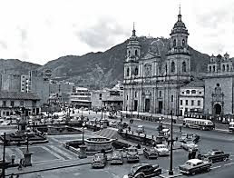

INFORMACIÓN GENERAL

- La historia de Bogotá cubre dos periodos. Antes de la fundación de la ciudad española, y después de esta. El primero va del 800 a. C., con los primeros asentamientos humanos, al 6 de agosto de 1538, cuando Gonzalo Jiménez de Quesada la fundó.
- El segundo, desde entonces hasta la actualidad. Hoy es la ciudad más extensa, poblada y activa de Colombia. Pero durante la Colonia rivalizó con Cartagena y Tunja por el primer puesto en importancia en el Nuevo Reino de Granada.
- Fue uno de los principales escenarios de la lucha por la Independencia.El siglo XX estuvo marcado por El Bogotazo y sus consecuencias, así como por un fuerte crecimiento y un desarrollo urbano poco regulado, con altos niveles de especulación inmobiliaria y con una clara tendencia de crecimiento hacia el norte y el occidente de la sabana.
- En los años cincuenta se conformó el Distrito Especial.Su desarrollo estuvo marcado por problemas de abastecimiento de agua y alcantarillado, que han sido substituidos por notables dificultades de movilidad.
- Es la principal economía de Colombia, y la cuarta de América Latina.
- En la actualidad, su área metropolitana es la mayor del país y la octava mayor de América.
FUENTE: https://bogota.gov.co/historia-de-bogota-recorrido-por-la-historia-de-la-ciudad-de-bogota